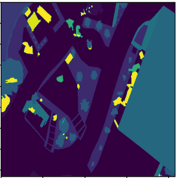
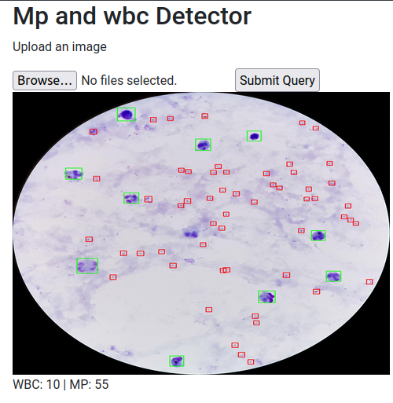
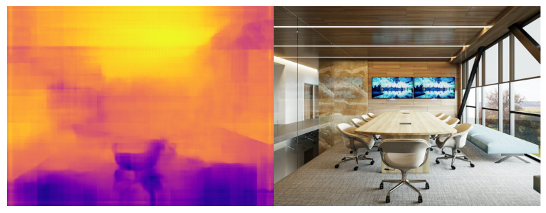
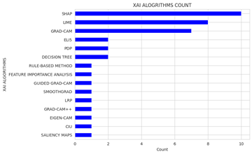
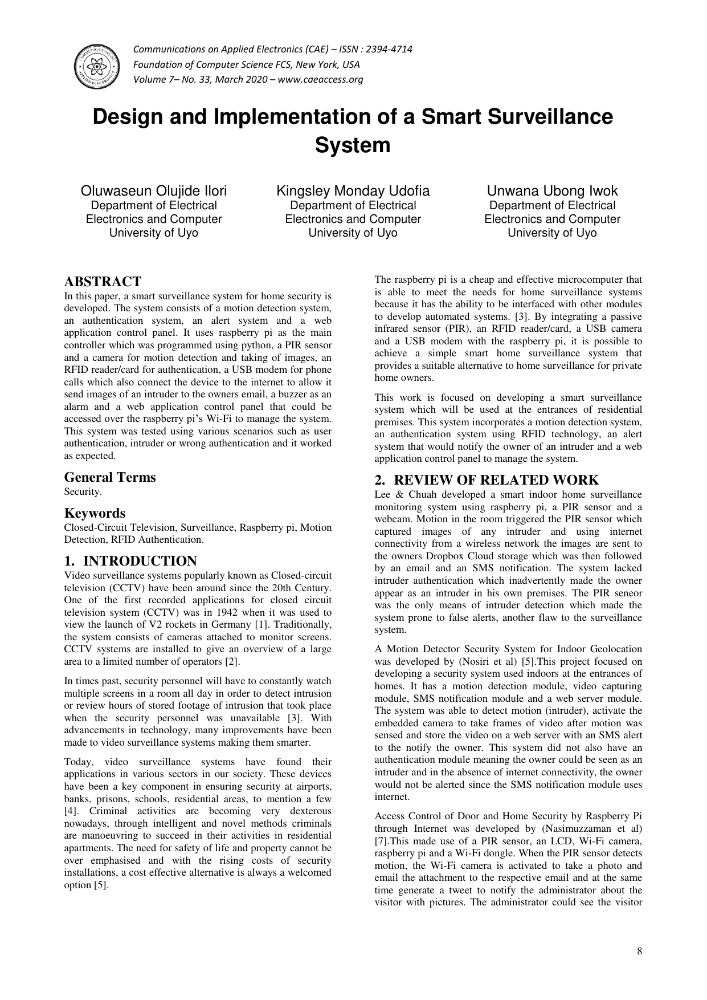

Oluwaseun Ilori
Applied AI for research and real-world systems
I build data, language, and computer vision systems that turn messy signals into reliable decisions.
I hold an MSc in Computer Science with an AI specialization and currently work as a Data Scientist at MyLane.AI. My work spans labor market analytics, computer vision systems, OCR pipelines, natural language processing, explainable AI, and research-driven product delivery.
About
AI engineer with a strong blend of research depth and delivery focus.
I work across computer vision, forecasting, machine learning, and data analytics, with a preference for projects that require rigorous experimentation and real operational value.
Education: MSc Computer Science (AI specialization), Babcock University. B.Eng Electrical and Electronics Engineering, University of Uyo.
Research interests: Computer Vision, Edge AI, Machine Learning.
Research-led problem solving
I translate recent machine learning and computer vision research into practical systems, with special interest in explainability and robust deployment.
Analytics with real business context
My recent work includes labor market analysis, workforce forecasting, compensation parsing, data cleaning, and insight delivery for decision-making teams.
Production-minded AI delivery
I have built and deployed APIs, OCR workflows, and vision models using tools such as FastAPI, Docker, Google Cloud Platform, PyTorch, and TensorFlow.
Teaching and mentorship
Alongside hands-on engineering, I support learners through SQL practicals, machine learning instruction, Linux system administration, and C programming tutoring.
Experience
Recent roles across data science, computer vision, teaching, and applied research.
My background combines experimentation, production delivery, and technical communication. I work best on teams where insight quality matters as much as implementation quality.
Selected wins
- Won the 2022 MathWorks MiniDrone Competition virtual round in the EMEA region, finishing ahead of 330+ teams.
- Published research spanning malaria detection, explainable AI in healthcare, and smart surveillance systems.
- Designed systems across diagnostics, OCR, object detection, segmentation, and forecasting.
MyLane.AI
Jul 2024 - PresentData Scientist
- Analyze U.S. labor market trends using job postings data, BLS, and Census sources.
- Build forecasting models for workforce growth across healthcare specialties.
- Support compensation parsing systems for wage extraction and normalization.
TalaNanu
May 2023 - Jun 2024Computer Vision Engineer
- Trained and deployed a fine-grained image classifier that reached 98% accuracy.
- Reduced OCR inference latency from over one minute to under 20 seconds.
- Delivered model training and deployment workflows with Docker, FastAPI, and GCP.
Babcock University
Oct 2025 - PresentTeaching Assistant and E-Tutor
- Teach machine learning, Linux system administration, C programming, and data management.
- Lead practical SQL sessions for Database Systems Design, Implementation and Management.
Zummit Africa
Nov 2021 - Mar 2022Deep Learning Intern
- Led an emotion detection project from predictive modeling through deployment.
- Supported team members who were new to deep learning workflows.
Skills
Tools and technologies I have used across data science, NLP, computer vision, and deployment.
My work spans analytics, modeling, NLP, computer vision, and deployment, using tools that support both research and production delivery.
Coverage
Data analysis, forecasting, NLP, computer vision, APIs, cloud deployment, and research workflows.
Programming and Data
Machine Learning and AI
MLOps and Cloud
Analytics and Visualization
Selected Projects
Applied machine learning work across disease diagnostics, OCR, depth estimation, and scene understanding.
These projects bring together computer vision, experimentation, and practical deployment for real-world problems and constraints.
Focus
Detection, OCR, segmentation, explainability, and deployment-ready APIs.
Featured projects

Aerial Semantic Segmentation
Built a semantic segmentation workflow for aerial imagery, combining custom OpenCV augmentation with a MobileNetV3-small U-Net architecture for low-data training.
View project
Malaria Parasite Detector
Trained an object detection system to count malaria parasites and white blood cells, then packaged prediction behind a custom FastAPI service deployed with Docker on Google Cloud.
View projectLicense Plate Reader and Custom OCR
Built the full ANPR pipeline for Nigerian plates, from data preparation and annotation tooling to object detection, custom OCR, and threshold adjustment with a regression model.
View project
Face Recognition and Tracking
Developed a real-time face recognition workflow with multi-object tracking for continuous identity matching in video streams.
View project
Monocular Depth Estimation
Implemented a custom ResNet18 encoder-decoder with skip connections for monocular depth estimation and trained it on the NYU-v2 dataset.
View projectPublications
Research outputs that reflect my interest in trustworthy computer vision and applied AI.
My published work covers malaria detection, explainable AI in healthcare, and embedded surveillance systems.
Research themes
Computer vision, explainability, healthcare AI, and intelligent sensing systems.
Selected publications

Performance Evaluation of YOLOv12 Models for Malaria Parasite and White Blood Cell Detection
Peer-reviewed study evaluating YOLOv12 variants for malaria microscopy detection, with emphasis on robust counting performance and practical diagnosis support.
View project
Explainable AI: A Systematic Literature Review Focusing on Healthcare
Systematic review of explainable AI methods in healthcare, covering interpretability trends, adoption concerns, and opportunities for trustworthy ML systems.
View project
Design and Implementation of a Smart Surveillance System
Engineering paper describing a Raspberry Pi-based surveillance system that combines sensing, RFID validation, and automated alerts for rapid incident response.
View projectCertifications
Courses and certifications that have shaped my technical background.
Here are some of the courses and training I have completed over the years.
Training areas
Deep learning, computer vision, machine learning fundamentals, and research writing.
Grant Writing Class
Jun 2025Research, Innovation and International Cooperation, Babcock University
Training focused on proposal development, research communication, and funding readiness.
Deep Learning With PyTorch
Jan 2024OpenCV.org
Practical deep learning training using PyTorch for model development and experimentation.
Convolutional Neural Networks in TensorFlow
Oct 2021DeepLearning.AI
Applied CNN concepts, image workflows, and TensorFlow-based deep learning implementation.
Introduction to AI, ML and DL
Sep 2021DeepLearning.AI
Foundational overview of artificial intelligence, machine learning, and deep learning systems.
Machine Learning with Python
Jul 2020CognitiveClass.ai
Introductory machine learning coursework covering core concepts and Python-based workflows.
Computer Vision for Faces
Oct 2018Big Vision LLC / LearnOpenCV
Covered image processing, OpenCV, Dlib, machine learning, and face recognition system development.